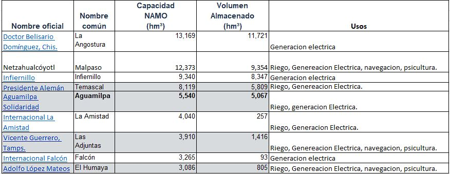

WaterGraph
Inforamción fiable de las presas y el porque debemos cuidarlas
Proposito del proyecto
El desabasto del agua es un problema bastante grande en Nuevo León, incluso tan grande que el resto de la republica esta siendo afectada de igual manera. Aún así, hay gente que cree que es un problema inexistente, o que ya termino el problema, y ahí llega nuestro proyecto. Nuestro proyecto va de mostrar una gráfica de las presas donde se demuestra la existencia del problema y que la gente vea la gravedad del asunto y poder alentar a un cambio, a su vez de mantener informada a la gente acerca de las presas.
Es un problema bastante grave que se debe solucionar. Uno debe verlo para poder creerlo y por eso existe el proyecto
Principales caracteristicas
Simple de utilizar
Es una página facil de utilizar
Actualizaciones constantes
Contamos con varias gráficas que se van actualizando periodicamente para mantener reciente nuestra información
Precisión
Contamos con gráficas bastantes precisas
Conciencia
Además de informar al público, nuestro proposito es que la gente vea las pruebas y tome conciencia
Principales presas

Gráfica de las mismas